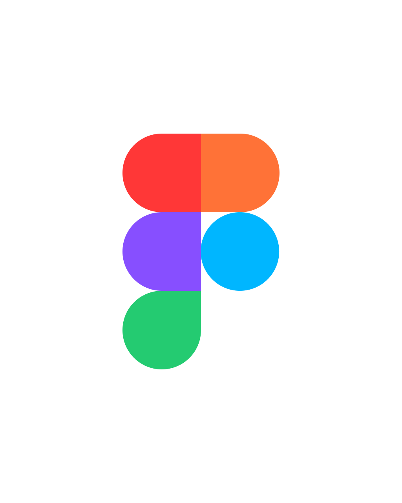

HIYU YAMAUCHI
PORTFOLIO
SCROLL
ABOUT
私について
- NAME
- 山内 飛勇 （やまうち ひゆう）
- INFORMATION
- 2003年生まれ。大阪府八尾市出身。
- BACKGROUND
-
清風情報工科学院 デザイン・コンピュータ学科 卒業（2024年）。
卒業後、東京のWEB制作会社に入社し、フロントエンド業務を1年間担当。
- GITHUB
- https://github.com/hiyu15123
- LIKE
- 登山、スノーボード、サカナクション
SKILL
できること
HTML5、Sass(Scss)
- BEM記法とFlocssで保守性のある記述を心がけています。
- EmmetやCSS変数を活用して素早く構築することを心がけています。
JavaScript（jQuery、Swiper、GSAP、Gulpなど）
- Vanillaを基本に記述します。
- Swiper・GSAPを用いたスライダーやアニメーションの実装ができます。
- DOM操作を中心に、タブ切り替えやドロップメニューなどのUI実装が得意です。
Vue.js
- Vueの基礎を学び、練習としてTodoリストを作成しました。
- refやv-onなどの基礎構文を使用して、タスクの追加や削除を実装しました。
- さらにローカルストレージの実装や外部ライブラリを使用してタスクを並び替えられるようにしました。
WordPress
- 実務でのテーマカスタマイズ経験があります。
- 基礎的なwordPressの関数の学び、テンプレートタグやループ処理、プラグインを使用してカスタマイズを行いました。
- 個人でも既存の静的サイトをWordPress化することに挑戦しました。サイトはこちら


OTHER TOOLS
- Figma、GitHubの使用経験があります。
- デザインカンプの確認にはFigmaを使用し、実装中のソースコードはGitHub上でバージョン管理を行っています。
- 前職ではGitの運用がなかったため、自ら書籍で学び、組織アカウントを作成しました。チームでの運用機会はなかったものの、個人開発で活用しながらバージョン管理の基本を身につけました。